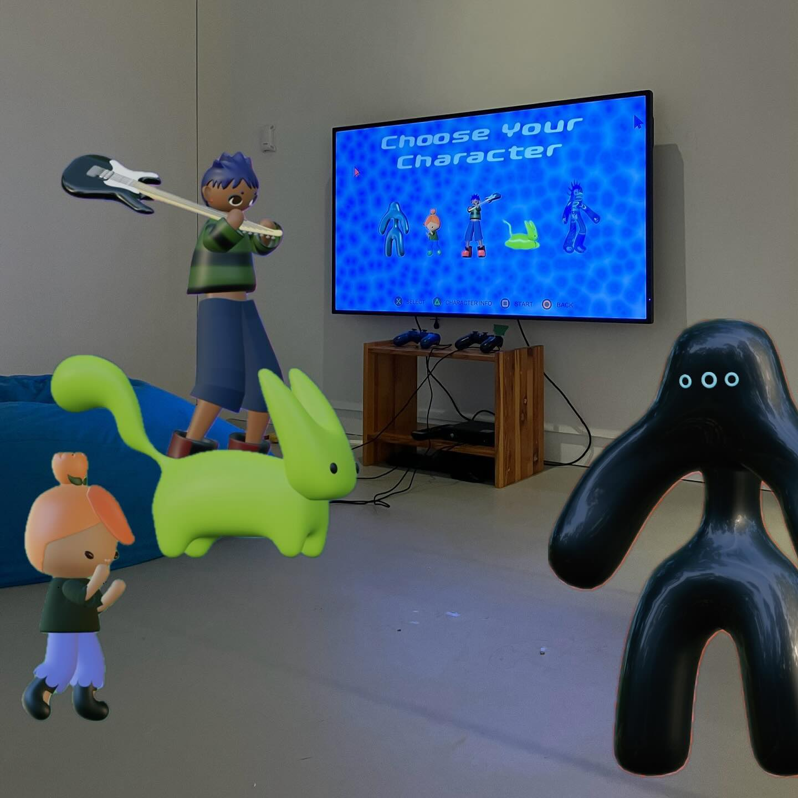
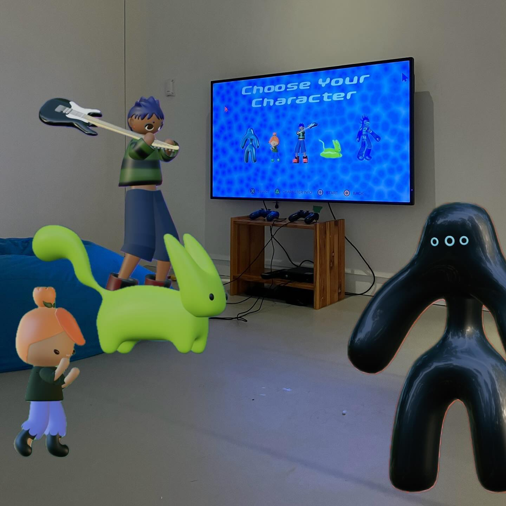

de-generate
Soundtrack: Listen Here!
Demo: Watch Here!
OCAD GradEx, Toronto, May 1-5 2023
Chat GPTea, Ignite Gallery, Toronto, December 13 2023 - January 14 2024
de-generate is an experimental fighting video game that explores how generative art may permeate as not only a technological aesthetic, but an essential component in gameplay and game evolution. Primarily realized through generative characters, digital beings and their core structural code may be intercepted and facilitated by the player, resulting in new, adaptive, and expressive experiences. As shape shifting avatars, generative characters maximizing the capabilities of the digital realm.
Interfaces, as they have been traditionally established, firmly place
human intention and raw computation at opposite ends of the screen.
While functionally efficient, this separation between collaborators
limits the infinite potential of digital expression. Interfaces that
push backend capabilities to the forefront will empower users to shape
their own digital inhabitance with flexibility, sovereignty, and
longevity.
de-generate postulates what such interfaces may entail through an
experimental hybrid of generative art (the approach) - and video games -
the medium. Featuring computationally unbounded characters, de-generate
makes full use of its algorithmic makeup with generative meshes,
movements, and game functions. Attributed by a sense of emergence,
generative characters have been coded as such - to exist - not to
operate. The fundamental structure may be harnessed and altered
alongside player input, leading to emergent gameplay that cannot be
predicted.
Video games as the medium, provides the perfect environment for
exploring new digital emergence due to their controlled system,
interdisciplinary components, and real-time participation. With all
factors accounted for, de-generate’s character focused format cleverly
disguises what is otherwise, user testing of the generative dynamics.
While video games commonly rely on predefined game beats, de-generate
explores how generative discovery may replace simulated gaming dynamics
with actual computation.
What meta game emerges from the chaos, is entirely unknown, and is
itself a generative process. As such, all development of a meta game has
been relinquished to participators of the game. How players adopt
strategies and tactics outside the core gameplay mechanics, especially
when involving exploitation of what may be ‘wrong’ with de-generate, is
essential in realizing the project’s core themes of autonomous digital
inhabitance.
Departing from established interfaces, de-generate offers a new way of
exploring digital reality, and presents an exciting example of how
digital interfaces may maximize human extension into computation.